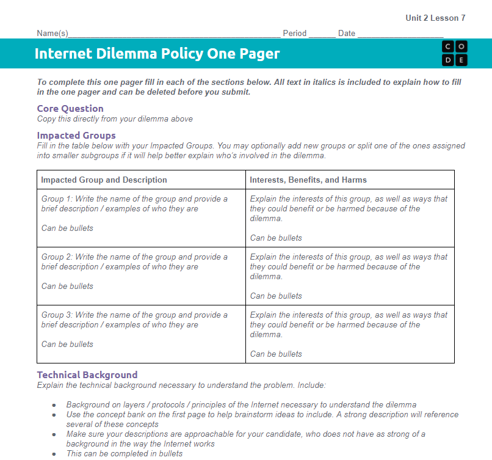
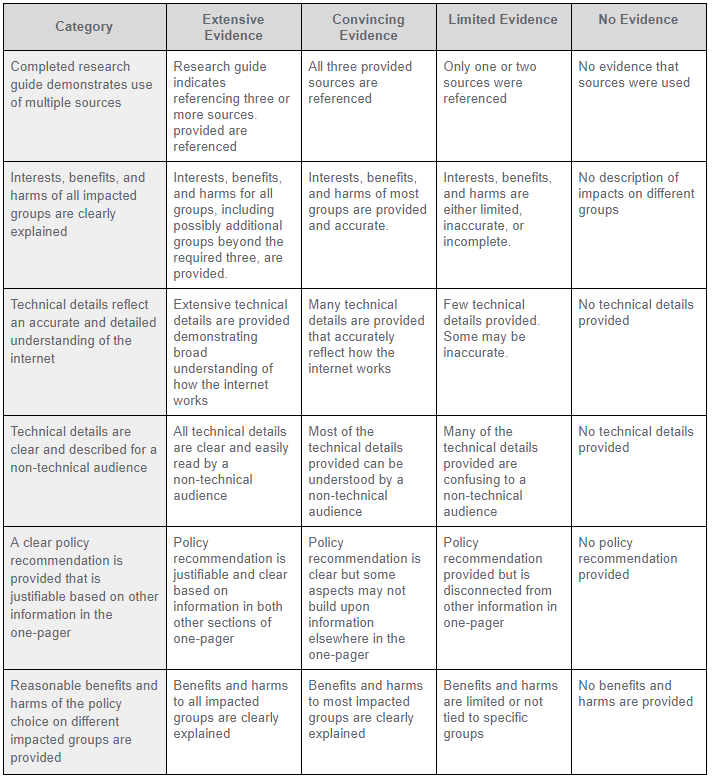

Congratulations! You have been hired as the Chief Technology Advisor for a candidate running for elected office.
Your candidate is relying on you to help keep the campaign informed about important technological dilemmas and come up with good policy ideas to address them.
You need to investigate a social dilemma related to the Internet and prepare a report summarizing your findings and making a policy recommendation for your candidate.
The next three slides describe the options you have to choose from.
Internet users love services like streaming movies, video chatting, or online gaming. All of this content needs to travel over the Internet, and the companies that build and maintain networks are complaining about the increased demands being placed on their networks. Your candidate is hearing more and more about a debate called net neutrality and would like a more informed opinion as part of her platform.
When and how should internet service providers be allowed to treat some kinds of internet traffic differently from others?
While the Internet is used to share many useful services and information, there are growing concerns about the way it can be used to spread damaging information, ranging from national secrets to calls for violence. Censoring this information may provide some people with increased security, but potentially risks free speech and the safety of social and political activists. Your candidate would like a policy that balances these two concerns for our digital age.
When and how should the government be allowed to censor or block internet traffic, if at all?
While technology is increasingly integrated into daily life, there are still many who lack access to the Internet or digital technology. Rural areas face challenges building networks to connect geographically sparse populations, but even in cities some groups or areas have relatively less access to the Internet or knowledge of how to use it. Your candidate is worried that while technology brings social and economic benefits to many, others are being left behind.
When and how should resources be invested to close gaps between those who do and don’t use the Internet?
(Re)read over the first page of the Project Guide and choose a dilemma.
Look over the one-pager template and rubric in the Project Guide to make sure you understand what you’ll be responsible for creating for this project and how it’ll be evaluated.


Review the one-pager template and rubric on the last page of the Project Guide to make sure you understand what you’ll be responsible for creating and how it’ll be evaluated. Post any questions you have here. If you can answer a question, please do!
The concept bank on your Project Guide includes the key terms and concepts covered in this unit. Quickly review them before reading your articles, and refer back to them as you complete your one-pager.
Physical internet, IP, TCP, UDP, HTTP, DNS
Fiber optic cable, copper wire, wifi, router, path, direct connection, bandwidth
Packet metadata, IP addresses, dynamic routing
Web pages, browsers, servers, domain, world wide web
Redundancy, fault tolerance, scalability, open protocols
Review the three sources provided in the Project Guide for your dilemma. You can include or substitute other sources you find online.
Complete each section of the Internet Dilemma Policy One Pager. Just include the important information.
Delete the text in italics when you have completed each section. When your candidate is reading your policy suggestions, the directions from the template would just waste their time.